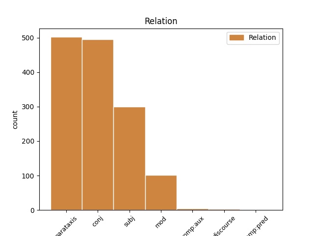
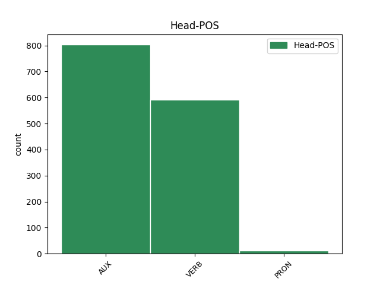
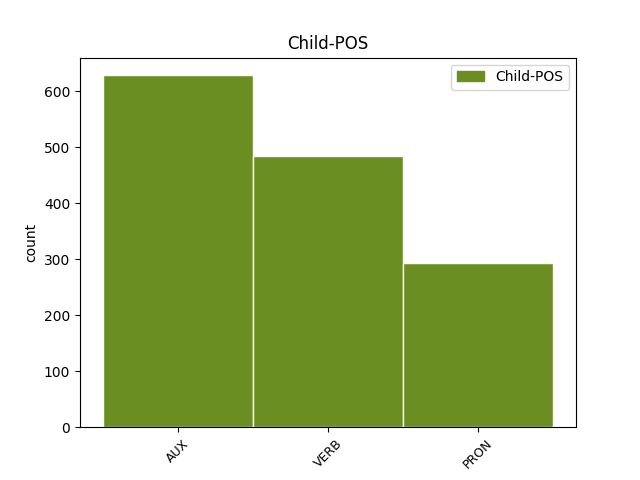

Distribution of features within this leaf



Agreement Rules sorted by frequency.
- When the dependent token is the subject(subj) of the head token, and the head token is AUX and the dependent token is PRON.
1 I _ _ _ _ 0 _ _ _
2 oni oni PRON Pp3mpn Case=Nom|Gender=Masc|Number=Plur|Person=3|PronType=Prs 3 subj _ _
3 su biti AUX Var3p Mood=Ind|Number=Plur|Person=3|Tense=Pres|VerbForm=Fin 0 _ _ _
4 apolitični _ _ _ _ 0 _ _ _
5 , _ _ _ _ 0 _ _ _
6 ako _ _ _ _ 0 _ _ _
7 se _ _ _ _ 0 _ _ _
8 pod _ _ _ _ 0 _ _ _
9 tim _ _ _ _ 0 _ _ _
10 podrazumeva _ _ _ _ 0 _ _ _
11 da _ _ _ _ 0 _ _ _
12 ih _ _ _ _ 0 _ _ _
13 Amerikanci _ _ _ _ 0 _ _ _
14 nisu _ _ _ _ 0 _ _ _
15 direktno _ _ _ _ 0 _ _ _
16 , _ _ _ _ 0 _ _ _
17 na _ _ _ _ 0 _ _ _
18 izborima _ _ _ _ 0 _ _ _
19 , _ _ _ _ 0 _ _ _
20 birali _ _ _ _ 0 _ _ _
21 na _ _ _ _ 0 _ _ _
22 važne _ _ _ _ 0 _ _ _
23 položaje _ _ _ _ 0 _ _ _
24 sa _ _ _ _ 0 _ _ _
25 kojih _ _ _ _ 0 _ _ _
26 bitno _ _ _ _ 0 _ _ _
27 utiču _ _ _ _ 0 _ _ _
28 na _ _ _ _ 0 _ _ _
29 politiku _ _ _ _ 0 _ _ _
30 zemlje _ _ _ _ 0 _ _ _
31 . _ _ _ _ 0 _ _ _
1 Ako _ _ _ _ 0 _ _ _
2 je _ _ _ _ 0 _ _ _
3 moguće _ _ _ _ 0 _ _ _
4 da _ _ _ _ 0 _ _ _
5 neko _ _ _ _ 0 _ _ _
6 uhakuje _ _ _ _ 0 _ _ _
7 vaš _ _ _ _ 0 _ _ _
8 toster _ _ _ _ 0 _ _ _
9 i _ _ _ _ 0 _ _ _
10 preko _ _ _ _ 0 _ _ _
11 njega _ _ _ _ 0 _ _ _
12 dođe doći VERB Vmr3s Mood=Ind|Number=Sing|Person=3|Tense=Pres|VerbForm=Fin 0 _ _ _
13 do _ _ _ _ 0 _ _ _
14 intimnih _ _ _ _ 0 _ _ _
15 podataka _ _ _ _ 0 _ _ _
16 o _ _ _ _ 0 _ _ _
17 vama _ _ _ _ 0 _ _ _
18 ili _ _ _ _ 0 _ _ _
19 hakovanjem _ _ _ _ 0 _ _ _
20 autopilota _ _ _ _ 0 _ _ _
21 u _ _ _ _ 0 _ _ _
22 kolima _ _ _ _ 0 _ _ _
23 može moći VERB Vmr3s Mood=Ind|Number=Sing|Person=3|Tense=Pres|VerbForm=Fin 12 conj _ _
24 da _ _ _ _ 0 _ _ _
25 se _ _ _ _ 0 _ _ _
26 počini _ _ _ _ 0 _ _ _
27 ubistvo _ _ _ _ 0 _ _ _
28 , _ _ _ _ 0 _ _ _
29 koliku _ _ _ _ 0 _ _ _
30 opasnost _ _ _ _ 0 _ _ _
31 onda _ _ _ _ 0 _ _ _
32 nosi _ _ _ _ 0 _ _ _
33 hakovanje _ _ _ _ 0 _ _ _
34 infrastrukture _ _ _ _ 0 _ _ _
35 ili _ _ _ _ 0 _ _ _
36 bolnica _ _ _ _ 0 _ _ _
37 ili _ _ _ _ 0 _ _ _
38 nuklearnih _ _ _ _ 0 _ _ _
39 silosa _ _ _ _ 0 _ _ _
40 ? _ _ _ _ 0 _ _ _
1 Ta _ _ _ _ 0 _ _ _
2 razlika _ _ _ _ 0 _ _ _
3 uočljiva _ _ _ _ 0 _ _ _
4 je biti AUX Var3s Mood=Ind|Number=Sing|Person=3|Tense=Pres|VerbForm=Fin 0 _ _ _
5 i _ _ _ _ 0 _ _ _
6 u _ _ _ _ 0 _ _ _
7 pojedinačnim _ _ _ _ 0 _ _ _
8 sudbinama _ _ _ _ 0 _ _ _
9 pisaca _ _ _ _ 0 _ _ _
10 : _ _ _ _ 0 _ _ _
11 dok _ _ _ _ 0 _ _ _
12 je biti AUX Var3s Mood=Ind|Number=Sing|Person=3|Tense=Pres|VerbForm=Fin 4 parataxis _ _
13 Hamet _ _ _ _ 0 _ _ _
14 bio _ _ _ _ 0 _ _ _
15 na _ _ _ _ 0 _ _ _
16 crnoj _ _ _ _ 0 _ _ _
17 listi _ _ _ _ 0 _ _ _
18 američkog _ _ _ _ 0 _ _ _
19 senatora _ _ _ _ 0 _ _ _
20 Makartija _ _ _ _ 0 _ _ _
21 , _ _ _ _ 0 _ _ _
22 jer _ _ _ _ 0 _ _ _
23 je _ _ _ _ 0 _ _ _
24 bio _ _ _ _ 0 _ _ _
25 osumnjičen _ _ _ _ 0 _ _ _
26 za _ _ _ _ 0 _ _ _
27 komunizam _ _ _ _ 0 _ _ _
28 , _ _ _ _ 0 _ _ _
29 Nezbe _ _ _ _ 0 _ _ _
30 je _ _ _ _ 0 _ _ _
31 globalna _ _ _ _ 0 _ _ _
32 zvezda _ _ _ _ 0 _ _ _
33 koja _ _ _ _ 0 _ _ _
34 bajkuje _ _ _ _ 0 _ _ _
35 sa _ _ _ _ 0 _ _ _
36 sadašnjim _ _ _ _ 0 _ _ _
37 sekretarom _ _ _ _ 0 _ _ _
38 NATO _ _ _ _ 0 _ _ _
39 pakta _ _ _ _ 0 _ _ _
40 , _ _ _ _ 0 _ _ _
41 Jensom _ _ _ _ 0 _ _ _
42 Stoltenbergom _ _ _ _ 0 _ _ _
43 . _ _ _ _ 0 _ _ _
1 Naime _ _ _ _ 0 _ _ _
2 , _ _ _ _ 0 _ _ _
3 2016. _ _ _ _ 0 _ _ _
4 jedan _ _ _ _ 0 _ _ _
5 pametni _ _ _ _ 0 _ _ _
6 automobil _ _ _ _ 0 _ _ _
7 američkog _ _ _ _ 0 _ _ _
8 proizvođača _ _ _ _ 0 _ _ _
9 Tesla _ _ _ _ 0 _ _ _
10 Motors _ _ _ _ 0 _ _ _
11 nije biti AUX Var3s Mood=Ind|Number=Sing|Person=3|Polarity=Neg|Tense=Pres|VerbForm=Fin 0 _ _ _
12 uspeo _ _ _ _ 0 _ _ _
13 da _ _ _ _ 0 _ _ _
14 uoči _ _ _ _ 0 _ _ _
15 razliku _ _ _ _ 0 _ _ _
16 između _ _ _ _ 0 _ _ _
17 bele _ _ _ _ 0 _ _ _
18 površine _ _ _ _ 0 _ _ _
19 prikolice _ _ _ _ 0 _ _ _
20 i _ _ _ _ 0 _ _ _
21 neba _ _ _ _ 0 _ _ _
22 i _ _ _ _ 0 _ _ _
23 došlo _ _ _ _ 0 _ _ _
24 je biti AUX Var3s Mood=Ind|Number=Sing|Person=3|Tense=Pres|VerbForm=Fin 11 conj _ _
25 do _ _ _ _ 0 _ _ _
26 sudara _ _ _ _ 0 _ _ _
27 sa _ _ _ _ 0 _ _ _
28 smrtnim _ _ _ _ 0 _ _ _
29 ishodom _ _ _ _ 0 _ _ _
30 . _ _ _ _ 0 _ _ _
1 Pored _ _ _ _ 0 _ _ _
2 brojnih _ _ _ _ 0 _ _ _
3 loših _ _ _ _ 0 _ _ _
4 posledica _ _ _ _ 0 _ _ _
5 , _ _ _ _ 0 _ _ _
6 nedostatak _ _ _ _ 0 _ _ _
7 sna _ _ _ _ 0 _ _ _
8 dovodi dovoditi VERB Vmr3s Mood=Ind|Number=Sing|Person=3|Tense=Pres|VerbForm=Fin 0 _ _ _
9 i _ _ _ _ 0 _ _ _
10 do _ _ _ _ 0 _ _ _
11 toga _ _ _ _ 0 _ _ _
12 da _ _ _ _ 0 _ _ _
13 mozak _ _ _ _ 0 _ _ _
14 počinje _ _ _ _ 0 _ _ _
15 da _ _ _ _ 0 _ _ _
16 „ _ _ _ _ 0 _ _ _
17 jede _ _ _ _ 0 _ _ _
18 sam _ _ _ _ 0 _ _ _
19 sebe _ _ _ _ 0 _ _ _
20 ” _ _ _ _ 0 _ _ _
21 , _ _ _ _ 0 _ _ _
22 zaključak _ _ _ _ 0 _ _ _
23 je biti AUX Var3s Mood=Ind|Number=Sing|Person=3|Tense=Pres|VerbForm=Fin 8 parataxis _ _
24 novog _ _ _ _ 0 _ _ _
25 istraživanja _ _ _ _ 0 _ _ _
1 Detektivi _ _ _ _ 0 _ _ _
2 su _ _ _ _ 0 _ _ _
3 ekscentrici _ _ _ _ 0 _ _ _
4 - _ _ _ _ 0 _ _ _
5 jer _ _ _ _ 0 _ _ _
6 genijalnost _ _ _ _ 0 _ _ _
7 , _ _ _ _ 0 _ _ _
8 da _ _ _ _ 0 _ _ _
9 bi _ _ _ _ 0 _ _ _
10 bila _ _ _ _ 0 _ _ _
11 autentična _ _ _ _ 0 _ _ _
12 , _ _ _ _ 0 _ _ _
13 traži _ _ _ _ 0 _ _ _
14 zrno _ _ _ _ 0 _ _ _
15 ludila _ _ _ _ 0 _ _ _
16 koje _ _ _ _ 0 _ _ _
17 se _ _ _ _ 0 _ _ _
18 naziva _ _ _ _ 0 _ _ _
19 ekscentričnost _ _ _ _ 0 _ _ _
20 - _ _ _ _ 0 _ _ _
21 ali _ _ _ _ 0 _ _ _
22 su biti AUX Var3p Mood=Ind|Number=Plur|Person=3|Tense=Pres|VerbForm=Fin 0 _ _ _
23 potpuno _ _ _ _ 0 _ _ _
24 normalni _ _ _ _ 0 _ _ _
25 / _ _ _ _ 0 _ _ _
26 obični _ _ _ _ 0 _ _ _
27 u _ _ _ _ 0 _ _ _
28 političkom _ _ _ _ 0 _ _ _
29 smislu _ _ _ _ 0 _ _ _
30 : _ _ _ _ 0 _ _ _
31 rade raditi VERB Vmr3p Mood=Ind|Number=Plur|Person=3|Tense=Pres|VerbForm=Fin 22 parataxis _ _
32 za _ _ _ _ 0 _ _ _
33 britansku _ _ _ _ 0 _ _ _
34 višu _ _ _ _ 0 _ _ _
35 klasu _ _ _ _ 0 _ _ _
36 , _ _ _ _ 0 _ _ _
37 koja _ _ _ _ 0 _ _ _
38 ih _ _ _ _ 0 _ _ _
39 poštuje _ _ _ _ 0 _ _ _
40 i _ _ _ _ 0 _ _ _
41 prisvaja _ _ _ _ 0 _ _ _
42 . _ _ _ _ 0 _ _ _
1 Dok _ _ _ _ 0 _ _ _
2 čitamo _ _ _ _ 0 _ _ _
3 mi mi PRON Pp1-pn Case=Nom|Number=Plur|Person=1|PronType=Prs 5 subj _ _
4 se _ _ _ _ 0 _ _ _
5 sećamo sećati VERB Vmr1p Mood=Ind|Number=Plur|Person=1|Tense=Pres|VerbForm=Fin 0 _ _ _
6 , _ _ _ _ 0 _ _ _
7 pronalazimo _ _ _ _ 0 _ _ _
8 poznate _ _ _ _ 0 _ _ _
9 situacije _ _ _ _ 0 _ _ _
10 i _ _ _ _ 0 _ _ _
11 vlastite _ _ _ _ 0 _ _ _
12 emocije _ _ _ _ 0 _ _ _
13 u _ _ _ _ 0 _ _ _
14 iskustvu _ _ _ _ 0 _ _ _
15 drugoga _ _ _ _ 0 _ _ _
16 . _ _ _ _ 0 _ _ _
1 U _ _ _ _ 0 _ _ _
2 pitanju _ _ _ _ 0 _ _ _
3 je _ _ _ _ 0 _ _ _
4 relativno _ _ _ _ 0 _ _ _
5 nov _ _ _ _ 0 _ _ _
6 koncept _ _ _ _ 0 _ _ _
7 poznat _ _ _ _ 0 _ _ _
8 pod _ _ _ _ 0 _ _ _
9 nazivom _ _ _ _ 0 _ _ _
10 Internet _ _ _ _ 0 _ _ _
11 stvari _ _ _ _ 0 _ _ _
12 ( _ _ _ _ 0 _ _ _
13 engl. _ _ _ _ 0 _ _ _
14 Internet _ _ _ _ 0 _ _ _
15 of _ _ _ _ 0 _ _ _
16 Things _ _ _ _ 0 _ _ _
17 , _ _ _ _ 0 _ _ _
18 IoT _ _ _ _ 0 _ _ _
19 ) _ _ _ _ 0 _ _ _
20 , _ _ _ _ 0 _ _ _
21 a _ _ _ _ 0 _ _ _
22 odnosi _ _ _ _ 0 _ _ _
23 se _ _ _ _ 0 _ _ _
24 na _ _ _ _ 0 _ _ _
25 neformalni _ _ _ _ 0 _ _ _
26 sistem _ _ _ _ 0 _ _ _
27 ljudi _ _ _ _ 0 _ _ _
28 i _ _ _ _ 0 _ _ _
29 stvari _ _ _ _ 0 _ _ _
30 koji _ _ _ _ 0 _ _ _
31 su biti AUX Var3p Mood=Ind|Number=Plur|Person=3|Tense=Pres|VerbForm=Fin 0 _ _ _
32 direktno _ _ _ _ 0 _ _ _
33 umreženi _ _ _ _ 0 _ _ _
34 na _ _ _ _ 0 _ _ _
35 određeni _ _ _ _ 0 _ _ _
36 način _ _ _ _ 0 _ _ _
37 i _ _ _ _ 0 _ _ _
38 međusobno _ _ _ _ 0 _ _ _
39 razmenjuju razmenjivati VERB Vmr3p Mood=Ind|Number=Plur|Person=3|Tense=Pres|VerbForm=Fin 31 conj _ _
40 podatke _ _ _ _ 0 _ _ _
41 . _ _ _ _ 0 _ _ _
1 Među _ _ _ _ 0 _ _ _
2 stanovništvom _ _ _ _ 0 _ _ _
3 pametnu _ _ _ _ 0 _ _ _
4 tehnologiju _ _ _ _ 0 _ _ _
5 mogu moći VERB Vmr3p Mood=Ind|Number=Plur|Person=3|Tense=Pres|VerbForm=Fin 0 _ _ _
6 da _ _ _ _ 0 _ _ _
7 priušte _ _ _ _ 0 _ _ _
8 pre _ _ _ _ 0 _ _ _
9 svega _ _ _ _ 0 _ _ _
10 pripadnici _ _ _ _ 0 _ _ _
11 više _ _ _ _ 0 _ _ _
12 i _ _ _ _ 0 _ _ _
13 donekle _ _ _ _ 0 _ _ _
14 srednje _ _ _ _ 0 _ _ _
15 klase _ _ _ _ 0 _ _ _
16 , _ _ _ _ 0 _ _ _
17 a _ _ _ _ 0 _ _ _
18 sličan _ _ _ _ 0 _ _ _
19 slučaj _ _ _ _ 0 _ _ _
20 je biti AUX Var3s Mood=Ind|Number=Sing|Person=3|Tense=Pres|VerbForm=Fin 5 conj _ _
21 i _ _ _ _ 0 _ _ _
22 sa _ _ _ _ 0 _ _ _
23 državama _ _ _ _ 0 _ _ _
24 . _ _ _ _ 0 _ _ _
1 Čitava _ _ _ _ 0 _ _ _
2 ta _ _ _ _ 0 _ _ _
3 „ _ _ _ _ 0 _ _ _
4 duboka _ _ _ _ 0 _ _ _
5 država _ _ _ _ 0 _ _ _
6 ” _ _ _ _ 0 _ _ _
7 ( _ _ _ _ 0 _ _ _
8 londonski _ _ _ _ 0 _ _ _
9 Ekonomist _ _ _ _ 0 _ _ _
10 tvrdi tvrditi VERB Vmr3s Mood=Ind|Number=Sing|Person=3|Tense=Pres|VerbForm=Fin 51 parataxis _ _
11 da _ _ _ _ 0 _ _ _
12 izraz _ _ _ _ 0 _ _ _
13 izvorno _ _ _ _ 0 _ _ _
14 potiče _ _ _ _ 0 _ _ _
15 iz _ _ _ _ 0 _ _ _
16 Turske _ _ _ _ 0 _ _ _
17 , _ _ _ _ 0 _ _ _
18 gde _ _ _ _ 0 _ _ _
19 „ _ _ _ _ 0 _ _ _
20 derin _ _ _ _ 0 _ _ _
21 devlet _ _ _ _ 0 _ _ _
22 ” _ _ _ _ 0 _ _ _
23 označava _ _ _ _ 0 _ _ _
24 grupu _ _ _ _ 0 _ _ _
25 penzionisanih _ _ _ _ 0 _ _ _
26 generala _ _ _ _ 0 _ _ _
27 koja _ _ _ _ 0 _ _ _
28 se _ _ _ _ 0 _ _ _
29 iza _ _ _ _ 0 _ _ _
30 kulisa _ _ _ _ 0 _ _ _
31 borila _ _ _ _ 0 _ _ _
32 da _ _ _ _ 0 _ _ _
33 svim _ _ _ _ 0 _ _ _
34 sredstvima _ _ _ _ 0 _ _ _
35 očuva _ _ _ _ 0 _ _ _
36 sekularnu _ _ _ _ 0 _ _ _
37 državu _ _ _ _ 0 _ _ _
38 i _ _ _ _ 0 _ _ _
39 porazi _ _ _ _ 0 _ _ _
40 komunizam _ _ _ _ 0 _ _ _
41 , _ _ _ _ 0 _ _ _
42 ne _ _ _ _ 0 _ _ _
43 prezajući _ _ _ _ 0 _ _ _
44 ni _ _ _ _ 0 _ _ _
45 od _ _ _ _ 0 _ _ _
46 kontakata _ _ _ _ 0 _ _ _
47 sa _ _ _ _ 0 _ _ _
48 gangsterima _ _ _ _ 0 _ _ _
49 ) _ _ _ _ 0 _ _ _
50 danas _ _ _ _ 0 _ _ _
51 radi raditi VERB Vmr3s Mood=Ind|Number=Sing|Person=3|Tense=Pres|VerbForm=Fin 0 _ _ _
52 na _ _ _ _ 0 _ _ _
53 tome _ _ _ _ 0 _ _ _
54 da _ _ _ _ 0 _ _ _
55 iz _ _ _ _ 0 _ _ _
56 Bele _ _ _ _ 0 _ _ _
57 kuće _ _ _ _ 0 _ _ _
58 istera _ _ _ _ 0 _ _ _
59 45. _ _ _ _ 0 _ _ _
60 američkog _ _ _ _ 0 _ _ _
61 predsednika _ _ _ _ 0 _ _ _
62 koji _ _ _ _ 0 _ _ _
63 je _ _ _ _ 0 _ _ _
64 izabran _ _ _ _ 0 _ _ _
65 suprotno _ _ _ _ 0 _ _ _
66 volji _ _ _ _ 0 _ _ _
67 elite _ _ _ _ 0 _ _ _
68 - _ _ _ _ 0 _ _ _
69 političke _ _ _ _ 0 _ _ _
70 , _ _ _ _ 0 _ _ _
71 vojne _ _ _ _ 0 _ _ _
72 , _ _ _ _ 0 _ _ _
73 medijske _ _ _ _ 0 _ _ _
74 , _ _ _ _ 0 _ _ _
75 svake _ _ _ _ 0 _ _ _
76 moguće _ _ _ _ 0 _ _ _
77 vašingtonske _ _ _ _ 0 _ _ _
78 elite _ _ _ _ 0 _ _ _
79 , _ _ _ _ 0 _ _ _
80 uključujući _ _ _ _ 0 _ _ _
81 tu _ _ _ _ 0 _ _ _
82 i _ _ _ _ 0 _ _ _
83 stranku _ _ _ _ 0 _ _ _
84 čiji _ _ _ _ 0 _ _ _
85 je _ _ _ _ 0 _ _ _
86 kandidat _ _ _ _ 0 _ _ _
87 bio _ _ _ _ 0 _ _ _
88 . _ _ _ _ 0 _ _ _
1 Drugim _ _ _ _ 0 _ _ _
2 rečima _ _ _ _ 0 _ _ _
3 , _ _ _ _ 0 _ _ _
4 što _ _ _ _ 0 _ _ _
5 je biti AUX Var3s Mood=Ind|Number=Sing|Person=3|Tense=Pres|VerbForm=Fin 12 mod _ _
6 više _ _ _ _ 0 _ _ _
7 povezanih _ _ _ _ 0 _ _ _
8 pametnih _ _ _ _ 0 _ _ _
9 uređaja _ _ _ _ 0 _ _ _
10 , _ _ _ _ 0 _ _ _
11 to _ _ _ _ 0 _ _ _
12 je biti AUX Var3s Mood=Ind|Number=Sing|Person=3|Tense=Pres|VerbForm=Fin 0 _ _ _
13 i _ _ _ _ 0 _ _ _
14 veća _ _ _ _ 0 _ _ _
15 njihova _ _ _ _ 0 _ _ _
16 efikasnost _ _ _ _ 0 _ _ _
17 , _ _ _ _ 0 _ _ _
18 jer _ _ _ _ 0 _ _ _
19 dobijaju _ _ _ _ 0 _ _ _
20 više _ _ _ _ 0 _ _ _
21 podataka _ _ _ _ 0 _ _ _
22 o _ _ _ _ 0 _ _ _
23 svetu _ _ _ _ 0 _ _ _
24 oko _ _ _ _ 0 _ _ _
25 sebe _ _ _ _ 0 _ _ _
26 . _ _ _ _ 0 _ _ _
1 " _ _ _ _ 0 _ _ _
2 Stranke _ _ _ _ 0 _ _ _
3 sadašnje _ _ _ _ 0 _ _ _
4 vlade _ _ _ _ 0 _ _ _
5 čekaju _ _ _ _ 0 _ _ _
6 da _ _ _ _ 0 _ _ _
7 Srbija _ _ _ _ 0 _ _ _
8 postane postati VERB Vmr3s Mood=Ind|Number=Sing|Person=3|Tense=Pres|VerbForm=Fin 0 _ _ _
9 kandidat _ _ _ _ 0 _ _ _
10 za _ _ _ _ 0 _ _ _
11 članstvo _ _ _ _ 0 _ _ _
12 u _ _ _ _ 0 _ _ _
13 EU _ _ _ _ 0 _ _ _
14 i _ _ _ _ 0 _ _ _
15 da _ _ _ _ 0 _ _ _
16 prodaju _ _ _ _ 0 _ _ _
17 telekomunikacionu _ _ _ _ 0 _ _ _
18 kompaniju _ _ _ _ 0 _ _ _
19 Telekom _ _ _ _ 0 _ _ _
20 Srbija _ _ _ _ 0 _ _ _
21 , _ _ _ _ 0 _ _ _
22 što _ _ _ _ 0 _ _ _
23 će hteti AUX Var3s Mood=Ind|Number=Sing|Person=3|Tense=Pres|VerbForm=Fin 8 mod _ _
24 onda _ _ _ _ 0 _ _ _
25 pokušati _ _ _ _ 0 _ _ _
26 da _ _ _ _ 0 _ _ _
27 iskoriste _ _ _ _ 0 _ _ _
28 na _ _ _ _ 0 _ _ _
29 sledećim _ _ _ _ 0 _ _ _
30 izborima _ _ _ _ 0 _ _ _
31 . _ _ _ _ 0 _ _ _
1 Švedska _ _ _ _ 0 _ _ _
2 je _ _ _ _ 0 _ _ _
3 saopštila _ _ _ _ 0 _ _ _
4 da _ _ _ _ 0 _ _ _
5 je biti AUX Var3s Mood=Ind|Number=Sing|Person=3|Tense=Pres|VerbForm=Fin 0 _ _ _
6 spremna _ _ _ _ 0 _ _ _
7 da _ _ _ _ 0 _ _ _
8 pomogne _ _ _ _ 0 _ _ _
9 oko _ _ _ _ 0 _ _ _
10 tehničkih _ _ _ _ 0 _ _ _
11 detalja _ _ _ _ 0 _ _ _
12 procesa _ _ _ _ 0 _ _ _
13 , _ _ _ _ 0 _ _ _
14 što _ _ _ _ 0 _ _ _
15 povećava povećavati VERB Vmr3s Mood=Ind|Number=Sing|Person=3|Tense=Pres|VerbForm=Fin 5 mod _ _
16 nade _ _ _ _ 0 _ _ _
17 da _ _ _ _ 0 _ _ _
18 bi _ _ _ _ 0 _ _ _
19 razgovori _ _ _ _ 0 _ _ _
20 mogli _ _ _ _ 0 _ _ _
21 uspešno _ _ _ _ 0 _ _ _
22 da _ _ _ _ 0 _ _ _
23 budu _ _ _ _ 0 _ _ _
24 završeni _ _ _ _ 0 _ _ _
25 do _ _ _ _ 0 _ _ _
26 sredine _ _ _ _ 0 _ _ _
27 2010. _ _ _ _ 0 _ _ _
28 godine _ _ _ _ 0 _ _ _
29 . _ _ _ _ 0 _ _ _
1 Međutim _ _ _ _ 0 _ _ _
2 , _ _ _ _ 0 _ _ _
3 kao _ _ _ _ 0 _ _ _
4 što _ _ _ _ 0 _ _ _
5 lagano _ _ _ _ 0 _ _ _
6 , _ _ _ _ 0 _ _ _
7 ali _ _ _ _ 0 _ _ _
8 sigurno _ _ _ _ 0 _ _ _
9 napreduje napredovati VERB Vmr3s Mood=Ind|Number=Sing|Person=3|Tense=Pres|VerbForm=Fin 0 _ _ _
10 širenje _ _ _ _ 0 _ _ _
11 nuklearnih _ _ _ _ 0 _ _ _
12 centrala _ _ _ _ 0 _ _ _
13 po _ _ _ _ 0 _ _ _
14 svetu _ _ _ _ 0 _ _ _
15 usred _ _ _ _ 0 _ _ _
16 ekonomske _ _ _ _ 0 _ _ _
17 isplativosti _ _ _ _ 0 _ _ _
18 dogod _ _ _ _ 0 _ _ _
19 nema nemati VERB Vmr3s Mood=Ind|Number=Sing|Person=3|Tense=Pres|VerbForm=Fin 9 mod _ _
20 akcidenata _ _ _ _ 0 _ _ _
21 , _ _ _ _ 0 _ _ _
22 tako _ _ _ _ 0 _ _ _
23 će _ _ _ _ 0 _ _ _
24 barem _ _ _ _ 0 _ _ _
25 zasad _ _ _ _ 0 _ _ _
26 i _ _ _ _ 0 _ _ _
27 Internet _ _ _ _ 0 _ _ _
28 stvari _ _ _ _ 0 _ _ _
29 nastaviti _ _ _ _ 0 _ _ _
30 da _ _ _ _ 0 _ _ _
31 postaje _ _ _ _ 0 _ _ _
32 realnost _ _ _ _ 0 _ _ _
33 , _ _ _ _ 0 _ _ _
34 dobrim _ _ _ _ 0 _ _ _
35 delom _ _ _ _ 0 _ _ _
36 i _ _ _ _ 0 _ _ _
37 zato _ _ _ _ 0 _ _ _
38 što _ _ _ _ 0 _ _ _
39 su _ _ _ _ 0 _ _ _
40 mlađe _ _ _ _ 0 _ _ _
41 generacije _ _ _ _ 0 _ _ _
42 već _ _ _ _ 0 _ _ _
43 od _ _ _ _ 0 _ _ _
44 malena _ _ _ _ 0 _ _ _
45 okružene _ _ _ _ 0 _ _ _
46 takvim _ _ _ _ 0 _ _ _
47 tehnološkim _ _ _ _ 0 _ _ _
48 konceptom _ _ _ _ 0 _ _ _
49 , _ _ _ _ 0 _ _ _
50 pa _ _ _ _ 0 _ _ _
51 i _ _ _ _ 0 _ _ _
52 delimično _ _ _ _ 0 _ _ _
53 integrisane _ _ _ _ 0 _ _ _
54 u _ _ _ _ 0 _ _ _
55 njega _ _ _ _ 0 _ _ _
56 . _ _ _ _ 0 _ _ _
1 Ono on PRON Pp3nsn Case=Nom|Gender=Neut|Number=Sing|Person=3|PronType=Prs 0 _ _ _
2 što _ _ _ _ 0 _ _ _
3 je biti AUX Var3s Mood=Ind|Number=Sing|Person=3|Tense=Pres|VerbForm=Fin 1 mod _ _
4 mlade _ _ _ _ 0 _ _ _
5 i _ _ _ _ 0 _ _ _
6 starije _ _ _ _ 0 _ _ _
7 ujedinilo _ _ _ _ 0 _ _ _
8 jeste _ _ _ _ 0 _ _ _
9 neprihvatanje _ _ _ _ 0 _ _ _
10 izbornih _ _ _ _ 0 _ _ _
11 rezultata _ _ _ _ 0 _ _ _
12 . _ _ _ _ 0 _ _ _
1 Naime _ _ _ _ 0 _ _ _
2 , _ _ _ _ 0 _ _ _
3 u _ _ _ _ 0 _ _ _
4 ovoj _ _ _ _ 0 _ _ _
5 vrsti _ _ _ _ 0 _ _ _
6 romana _ _ _ _ 0 _ _ _
7 ne _ _ _ _ 0 _ _ _
8 odgoneta odgonetati VERB Vmr3s Mood=Ind|Number=Sing|Person=3|Tense=Pres|VerbForm=Fin 0 _ _ _
9 se _ _ _ _ 0 _ _ _
10 samo _ _ _ _ 0 _ _ _
11 ko _ _ _ _ 0 _ _ _
12 je biti AUX Var3s Mood=Ind|Number=Sing|Person=3|Tense=Pres|VerbForm=Fin 8 subj _ _
13 ubica _ _ _ _ 0 _ _ _
14 , _ _ _ _ 0 _ _ _
15 već _ _ _ _ 0 _ _ _
16 i _ _ _ _ 0 _ _ _
17 u _ _ _ _ 0 _ _ _
18 kakvom _ _ _ _ 0 _ _ _
19 svetu _ _ _ _ 0 _ _ _
20 živimo _ _ _ _ 0 _ _ _
21 . _ _ _ _ 0 _ _ _
1 Jedna _ _ _ _ 0 _ _ _
2 od _ _ _ _ 0 _ _ _
3 njih oni PRON Pp3-pg Case=Gen|Number=Plur|Person=3|PronType=Prs 0 _ _ _
4 je _ _ _ _ 0 _ _ _
5 Sleep _ _ _ _ 0 _ _ _
6 Calculator _ _ _ _ 0 _ _ _
7 koja _ _ _ _ 0 _ _ _
8 omogućava omogućavati VERB Vmr3s Mood=Ind|Number=Sing|Person=3|Tense=Pres|VerbForm=Fin 3 mod _ _
9 da _ _ _ _ 0 _ _ _
10 se _ _ _ _ 0 _ _ _
11 podesi _ _ _ _ 0 _ _ _
12 vreme _ _ _ _ 0 _ _ _
13 za _ _ _ _ 0 _ _ _
14 buđenje _ _ _ _ 0 _ _ _
15 tako _ _ _ _ 0 _ _ _
16 da _ _ _ _ 0 _ _ _
17 REM _ _ _ _ 0 _ _ _
18 faza _ _ _ _ 0 _ _ _
19 ne _ _ _ _ 0 _ _ _
20 bude _ _ _ _ 0 _ _ _
21 prekinuta _ _ _ _ 0 _ _ _
22 , _ _ _ _ 0 _ _ _
23 a _ _ _ _ 0 _ _ _
24 daje _ _ _ _ 0 _ _ _
25 i _ _ _ _ 0 _ _ _
26 mogućnost _ _ _ _ 0 _ _ _
27 da _ _ _ _ 0 _ _ _
28 se _ _ _ _ 0 _ _ _
29 odabere _ _ _ _ 0 _ _ _
30 vreme _ _ _ _ 0 _ _ _
31 buđenja _ _ _ _ 0 _ _ _
32 u _ _ _ _ 0 _ _ _
33 zavisnosti _ _ _ _ 0 _ _ _
34 od _ _ _ _ 0 _ _ _
35 toga _ _ _ _ 0 _ _ _
36 koliko _ _ _ _ 0 _ _ _
37 ciklusa _ _ _ _ 0 _ _ _
38 želimo _ _ _ _ 0 _ _ _
39 da _ _ _ _ 0 _ _ _
40 odspavamo _ _ _ _ 0 _ _ _
41 . _ _ _ _ 0 _ _ _
1 Nije biti AUX Var3s Mood=Ind|Number=Sing|Person=3|Tense=Pres|VerbForm=Fin 0 _ _ _
2 sasvim _ _ _ _ 0 _ _ _
3 jasno _ _ _ _ 0 _ _ _
4 koliko _ _ _ _ 0 _ _ _
5 se _ _ _ _ 0 _ _ _
6 dugo _ _ _ _ 0 _ _ _
7 mogu moći VERB Vmr3p Mood=Ind|Number=Plur|Person=3|Tense=Pres|VerbForm=Fin 1 subj _ _
8 osećati _ _ _ _ 0 _ _ _
9 posledice _ _ _ _ 0 _ _ _
10 deprivacije _ _ _ _ 0 _ _ _
11 sna _ _ _ _ 0 _ _ _
12 . _ _ _ _ 0 _ _ _
1 " _ _ _ _ 0 _ _ _
2 Dobro _ _ _ _ 0 _ _ _
3 je biti AUX Var3s Mood=Ind|Number=Sing|Person=3|Tense=Pres|VerbForm=Fin 0 _ _ _
4 što _ _ _ _ 0 _ _ _
5 su biti AUX Var3p Mood=Ind|Number=Plur|Person=3|Tense=Pres|VerbForm=Fin 3 subj _ _
6 izašli _ _ _ _ 0 _ _ _
7 da _ _ _ _ 0 _ _ _
8 ljudima _ _ _ _ 0 _ _ _
9 daju _ _ _ _ 0 _ _ _
10 više _ _ _ _ 0 _ _ _
11 informacija _ _ _ _ 0 _ _ _
12 " _ _ _ _ 0 _ _ _
13 , _ _ _ _ 0 _ _ _
14 kaže _ _ _ _ 0 _ _ _
15 Valentina _ _ _ _ 0 _ _ _
16 Bolokan _ _ _ _ 0 _ _ _
17 ( _ _ _ _ 0 _ _ _
18 52 _ _ _ _ 0 _ _ _
19 ) _ _ _ _ 0 _ _ _
20 iz _ _ _ _ 0 _ _ _
21 Kišinjeva _ _ _ _ 0 _ _ _
22 , _ _ _ _ 0 _ _ _
23 majka _ _ _ _ 0 _ _ _
24 troje _ _ _ _ 0 _ _ _
25 dece _ _ _ _ 0 _ _ _
26 . _ _ _ _ 0 _ _ _
1 Ukratko _ _ _ _ 0 _ _ _
2 , _ _ _ _ 0 _ _ _
3 novo _ _ _ _ 0 _ _ _
4 Ljosino _ _ _ _ 0 _ _ _
5 ostvarenje _ _ _ _ 0 _ _ _
6 spada _ _ _ _ 0 _ _ _
7 u _ _ _ _ 0 _ _ _
8 srednji _ _ _ _ 0 _ _ _
9 vrednosni _ _ _ _ 0 _ _ _
10 nivo _ _ _ _ 0 _ _ _
11 i _ _ _ _ 0 _ _ _
12 više _ _ _ _ 0 _ _ _
13 će hteti AUX Var3s Mood=Ind|Number=Sing|Person=3|Tense=Pres|VerbForm=Fin 0 _ _ _
14 da _ _ _ _ 0 _ _ _
15 vas _ _ _ _ 0 _ _ _
16 zabavi zabaviti VERB Vmr3s Mood=Ind|Number=Sing|Person=3|Tense=Pres|VerbForm=Fin 13 comp:aux _ _
17 nego _ _ _ _ 0 _ _ _
18 da _ _ _ _ 0 _ _ _
19 vas _ _ _ _ 0 _ _ _
20 odlučno _ _ _ _ 0 _ _ _
21 i _ _ _ _ 0 _ _ _
22 neopozivo _ _ _ _ 0 _ _ _
23 suoči _ _ _ _ 0 _ _ _
24 sa _ _ _ _ 0 _ _ _
25 slikom _ _ _ _ 0 _ _ _
26 savremenog _ _ _ _ 0 _ _ _
27 sveta _ _ _ _ 0 _ _ _
28 u _ _ _ _ 0 _ _ _
29 kojoj _ _ _ _ 0 _ _ _
30 se _ _ _ _ 0 _ _ _
31 , _ _ _ _ 0 _ _ _
32 na _ _ _ _ 0 _ _ _
33 neki _ _ _ _ 0 _ _ _
34 iznenađujuć _ _ _ _ 0 _ _ _
35 način _ _ _ _ 0 _ _ _
36 , _ _ _ _ 0 _ _ _
37 socijalna _ _ _ _ 0 _ _ _
38 stvarnost _ _ _ _ 0 _ _ _
39 Perua _ _ _ _ 0 _ _ _
40 i _ _ _ _ 0 _ _ _
41 Srbije _ _ _ _ 0 _ _ _
42 , _ _ _ _ 0 _ _ _
43 Lime _ _ _ _ 0 _ _ _
44 i _ _ _ _ 0 _ _ _
45 Beograda _ _ _ _ 0 _ _ _
46 čine _ _ _ _ 0 _ _ _
47 još _ _ _ _ 0 _ _ _
48 malo _ _ _ _ 0 _ _ _
49 pa _ _ _ _ 0 _ _ _
50 analognim _ _ _ _ 0 _ _ _
51 ! _ _ _ _ 0 _ _ _
1 " _ _ _ _ 0 _ _ _
2 Odgovarajući _ _ _ _ 0 _ _ _
3 zakonski _ _ _ _ 0 _ _ _
4 okvir _ _ _ _ 0 _ _ _
5 je _ _ _ _ 0 _ _ _
6 od _ _ _ _ 0 _ _ _
7 presudne _ _ _ _ 0 _ _ _
8 važnosti _ _ _ _ 0 _ _ _
9 , _ _ _ _ 0 _ _ _
10 ali _ _ _ _ 0 _ _ _
11 će hteti AUX Var3s Mood=Ind|Number=Sing|Person=3|Tense=Pres|VerbForm=Fin 0 _ _ _
12 do _ _ _ _ 0 _ _ _
13 stvarnog _ _ _ _ 0 _ _ _
14 poboljšanja _ _ _ _ 0 _ _ _
15 doći _ _ _ _ 0 _ _ _
16 će hteti AUX Var3s Mood=Ind|Number=Sing|Person=3|Tense=Pres|VerbForm=Fin 11 comp:aux _ _
17 tek _ _ _ _ 0 _ _ _
18 kada _ _ _ _ 0 _ _ _
19 se _ _ _ _ 0 _ _ _
20 zakoni _ _ _ _ 0 _ _ _
21 budu _ _ _ _ 0 _ _ _
22 poštovali _ _ _ _ 0 _ _ _
23 i _ _ _ _ 0 _ _ _
24 kada _ _ _ _ 0 _ _ _
25 se _ _ _ _ 0 _ _ _
26 promene _ _ _ _ 0 _ _ _
27 običaji _ _ _ _ 0 _ _ _
28 i _ _ _ _ 0 _ _ _
29 ponašanje _ _ _ _ 0 _ _ _
30 pripadnika _ _ _ _ 0 _ _ _
31 policije _ _ _ _ 0 _ _ _
32 , _ _ _ _ 0 _ _ _
33 " _ _ _ _ 0 _ _ _
34 rekao _ _ _ _ 0 _ _ _
35 je _ _ _ _ 0 _ _ _
36 Ervan _ _ _ _ 0 _ _ _
37 Fuere _ _ _ _ 0 _ _ _
38 , _ _ _ _ 0 _ _ _
39 predstavnik _ _ _ _ 0 _ _ _
40 EU _ _ _ _ 0 _ _ _
41 u _ _ _ _ 0 _ _ _
42 Makedoniji _ _ _ _ 0 _ _ _
43 . _ _ _ _ 0 _ _ _
1 Alijansa _ _ _ _ 0 _ _ _
2 nije biti AUX Var3s Mood=Ind|Number=Sing|Person=3|Polarity=Neg|Tense=Pres|VerbForm=Fin 0 _ _ _
3 više _ _ _ _ 0 _ _ _
4 ono on PRON Pp3nsn Case=Nom|Gender=Neut|Number=Sing|Person=3|PronType=Prs 2 comp:pred _ _
5 što _ _ _ _ 0 _ _ _
6 je _ _ _ _ 0 _ _ _
7 bila _ _ _ _ 0 _ _ _
8 za _ _ _ _ 0 _ _ _
9 vreme _ _ _ _ 0 _ _ _
10 Hladnog _ _ _ _ 0 _ _ _
11 rata _ _ _ _ 0 _ _ _
12 . _ _ _ _ 0 _ _ _
1 Nadam _ _ _ _ 0 _ _ _
2 se _ _ _ _ 0 _ _ _
3 da _ _ _ _ 0 _ _ _
4 će _ _ _ _ 0 _ _ _
5 nakon _ _ _ _ 0 _ _ _
6 okrivljavanja _ _ _ _ 0 _ _ _
7 vladajuće _ _ _ _ 0 _ _ _
8 koalicije _ _ _ _ 0 _ _ _
9 i _ _ _ _ 0 _ _ _
10 usmeravanja _ _ _ _ 0 _ _ _
11 besa _ _ _ _ 0 _ _ _
12 na _ _ _ _ 0 _ _ _
13 „ _ _ _ _ 0 _ _ _
14 njega on PRON Pp3msa Case=Acc|Gender=Masc|Number=Sing|Person=3|PronType=Prs 0 _ _ _
15 ” _ _ _ _ 0 _ _ _
16 i _ _ _ _ 0 _ _ _
17 „ _ _ _ _ 0 _ _ _
18 njih oni PRON Pp3-pa Case=Acc|Number=Plur|Person=3|PronType=Prs 14 conj _ SpaceAfter=No
19 ” _ _ _ _ 0 _ _ _
20 , _ _ _ _ 0 _ _ _
21 opozicija _ _ _ _ 0 _ _ _
22 prihvatiti _ _ _ _ 0 _ _ _
23 svoju _ _ _ _ 0 _ _ _
24 odgovornost _ _ _ _ 0 _ _ _
25 za _ _ _ _ 0 _ _ _
26 neuspeh _ _ _ _ 0 _ _ _
27 i _ _ _ _ 0 _ _ _
28 bolje _ _ _ _ 0 _ _ _
29 artikulisati _ _ _ _ 0 _ _ _
30 svoje _ _ _ _ 0 _ _ _
31 političke _ _ _ _ 0 _ _ _
32 programe _ _ _ _ 0 _ _ _
33 i _ _ _ _ 0 _ _ _
34 ciljeve _ _ _ _ 0 _ _ _
35 . _ _ _ _ 0 _ _ _
Disagree Examples:
1 " _ _ _ _ 0 _ _ _
2 Uverena _ _ _ _ 0 _ _ _
3 sam biti AUX Var1s Mood=Ind|Number=Sing|Person=1|Tense=Pres|VerbForm=Fin 0 _ _ _
4 da _ _ _ _ 0 _ _ _
5 će _ _ _ _ 0 _ _ _
6 Paukova _ _ _ _ 0 _ _ _
7 mreža _ _ _ _ 0 _ _ _
8 imati _ _ _ _ 0 _ _ _
9 svoj _ _ _ _ 0 _ _ _
10 epilog _ _ _ _ 0 _ _ _
11 na _ _ _ _ 0 _ _ _
12 međunarodnim _ _ _ _ 0 _ _ _
13 sudovima _ _ _ _ 0 _ _ _
14 " _ _ _ _ 0 _ _ _
15 , _ _ _ _ 0 _ _ _
16 rekla _ _ _ _ 0 _ _ _
17 je biti AUX Var3s Mood=Ind|Number=Sing|Person=3|Tense=Pres|VerbForm=Fin 3 parataxis _ _
18 Taseva _ _ _ _ 0 _ _ _
19 . _ _ _ _ 0 _ _ _
1 " _ _ _ _ 0 _ _ _
2 Ostajem ostajati VERB Vmr1s Mood=Ind|Number=Sing|Person=1|Tense=Pres|VerbForm=Fin 0 _ _ _
3 član _ _ _ _ 0 _ _ _
4 Predsedništva _ _ _ _ 0 _ _ _
5 [ _ _ _ _ 0 _ _ _
6 BiH _ _ _ _ 0 _ _ _
7 ] _ _ _ _ 0 _ _ _
8 i _ _ _ _ 0 _ _ _
9 nastavljam _ _ _ _ 0 _ _ _
10 na _ _ _ _ 0 _ _ _
11 tom _ _ _ _ 0 _ _ _
12 položaju _ _ _ _ 0 _ _ _
13 da _ _ _ _ 0 _ _ _
14 radim _ _ _ _ 0 _ _ _
15 u _ _ _ _ 0 _ _ _
16 punom _ _ _ _ 0 _ _ _
17 kapacitetu _ _ _ _ 0 _ _ _
18 sa _ _ _ _ 0 _ _ _
19 svim _ _ _ _ 0 _ _ _
20 obavezama _ _ _ _ 0 _ _ _
21 prema _ _ _ _ 0 _ _ _
22 državi _ _ _ _ 0 _ _ _
23 " _ _ _ _ 0 _ _ _
24 , _ _ _ _ 0 _ _ _
25 izjavio _ _ _ _ 0 _ _ _
26 je biti AUX Var3s Mood=Ind|Number=Sing|Person=3|Tense=Pres|VerbForm=Fin 2 parataxis _ _
27 Komšić _ _ _ _ 0 _ _ _
28 medijima _ _ _ _ 0 _ _ _
29 nakon _ _ _ _ 0 _ _ _
30 što _ _ _ _ 0 _ _ _
31 je _ _ _ _ 0 _ _ _
32 saopštio _ _ _ _ 0 _ _ _
33 da _ _ _ _ 0 _ _ _
34 podnosi _ _ _ _ 0 _ _ _
35 ostavku _ _ _ _ 0 _ _ _
36 na _ _ _ _ 0 _ _ _
37 mesto _ _ _ _ 0 _ _ _
38 u _ _ _ _ 0 _ _ _
39 stranci _ _ _ _ 0 _ _ _
40 . _ _ _ _ 0 _ _ _
1 Mi mi PRON Pp1-pn Case=Nom|Number=Plur|Person=1|PronType=Prs 2 subj _ _
2 treba trebati VERB Vmr3s Mood=Ind|Number=Sing|Person=3|Tense=Pres|VerbForm=Fin 0 _ _ _
3 da _ _ _ _ 0 _ _ _
4 ... _ _ _ _ 0 _ _ _
5 damo _ _ _ _ 0 _ _ _
6 podršku _ _ _ _ 0 _ _ _
7 Jeremiću _ _ _ _ 0 _ _ _
8 . _ _ _ _ 0 _ _ _
1 U _ _ _ _ 0 _ _ _
2 suprotnom _ _ _ _ 0 _ _ _
3 ćemo hteti AUX Var1p Mood=Ind|Number=Plur|Person=1|Tense=Pres|VerbForm=Fin 0 _ _ _
4 biti _ _ _ _ 0 _ _ _
5 neozbiljni _ _ _ _ 0 _ _ _
6 političari _ _ _ _ 0 _ _ _
7 bez _ _ _ _ 0 _ _ _
8 zajedničkog _ _ _ _ 0 _ _ _
9 stava _ _ _ _ 0 _ _ _
10 " _ _ _ _ 0 _ _ _
11 , _ _ _ _ 0 _ _ _
12 rekao _ _ _ _ 0 _ _ _
13 je biti AUX Var3s Mood=Ind|Number=Sing|Person=3|Tense=Pres|VerbForm=Fin 3 parataxis _ _
14 Lagumdžija _ _ _ _ 0 _ _ _
15 novinarima _ _ _ _ 0 _ _ _
16 u _ _ _ _ 0 _ _ _
17 Beogradu _ _ _ _ 0 _ _ _
18 posle _ _ _ _ 0 _ _ _
19 sastanka _ _ _ _ 0 _ _ _
20 sa _ _ _ _ 0 _ _ _
21 Jeremićem _ _ _ _ 0 _ _ _
22 14. _ _ _ _ 0 _ _ _
23 marta _ _ _ _ 0 _ _ _
24 . _ _ _ _ 0 _ _ _
1 Zbog _ _ _ _ 0 _ _ _
2 tih _ _ _ _ 0 _ _ _
3 koraka _ _ _ _ 0 _ _ _
4 ga _ _ _ _ 0 _ _ _
5 još _ _ _ _ 0 _ _ _
6 snažnije _ _ _ _ 0 _ _ _
7 podržavam podržavati VERB Vmr1s Mood=Ind|Number=Sing|Person=1|Tense=Pres|VerbForm=Fin 0 _ _ _
8 " _ _ _ _ 0 _ _ _
9 , _ _ _ _ 0 _ _ _
10 rekao _ _ _ _ 0 _ _ _
11 je biti AUX Var3s Mood=Ind|Number=Sing|Person=3|Tense=Pres|VerbForm=Fin 7 parataxis _ _
12 stanovnik _ _ _ _ 0 _ _ _
13 Tuzle _ _ _ _ 0 _ _ _
14 Ivica _ _ _ _ 0 _ _ _
15 Tomić _ _ _ _ 0 _ _ _
16 za _ _ _ _ 0 _ _ _
17 SETimes _ _ _ _ 0 _ _ _
18 . _ _ _ _ 0 _ _ _